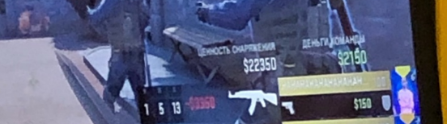

Саня ГуберТоп Геймер, программист, сын Джарахова Великий основатель Rampage |
|  | Саня потрясающий человек. Забавно, но я не знал этого, пока не узнал, что его среднее К/Д = 1/13. Наверное я воспринимал его счёт как должное или что-то в этом роде.Сейчас я так не думаю. С тех пор, как я понял, что Саня может в соло сливать игру и без нас. Все изменилось, как я понял что в ближайшее время Саня может попасть в высшую лигу по CS:GO. С тех пор, как я понял, что однажды в ближайшем будущем его может не быть рядом и он будет где то на турнире без нас, стало сводить меня с ума Саня учился в церковно приходской школе, и его IQ был всегда не больше обезьянего. Тем неменее он смог её закончить. О Сане можно говорить долго, но какой в этом смысл? |